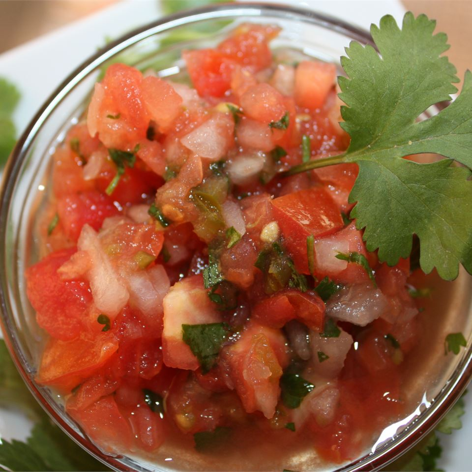

Fresh Tomato Salsa

Yet Another Mexican Favourite
This is a delicious homemade salsa.
Ingredients
- 3 tomatoes, chopped
- ½ cup finely diced onion
- 5 serrano chiles, finely chopped
- ½ cup chopped fresh cilantro
- 1 teaspoon salt
- 2 teaspoons lime juice
Steps
-
Chop all ingredients
-
In a medium bowl, stir together tomatoes, onion, chili peppers, cilantro, salt, and lime juice.
-
Chill for one hour in the refrigerator before serving.